| 日付 | 2023年8月14日（月） - 2023年8月19日（土） | ||||||||
|---|---|---|---|---|---|---|---|---|---|
| 山域 | 北アルプス | ||||||||
| メンバー | 家族（妻、長男・10歳） | ||||||||
| 山行形態 | 子連れ5泊6日旅館、山小屋、キャンプ泊 | ||||||||
| アクセス | 車 | ||||||||
| ルート (Map) |
|
5日目
夜明け前。東の空が白んでくる。
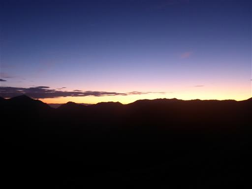
黒い雲が朝陽を浴びて赤く光っている。ちょっと不気味な光景だ。
双六小屋の東には常念山脈が横たわっているので、日の出は遅い。
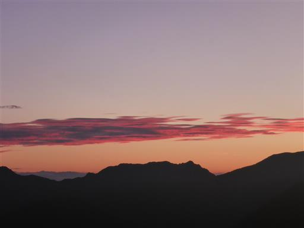
5時13分にようやく日の出を迎える。燕岳の右辺りから太陽が顔を出す。
山の中で御来光を拝むのは何年振りだろう？
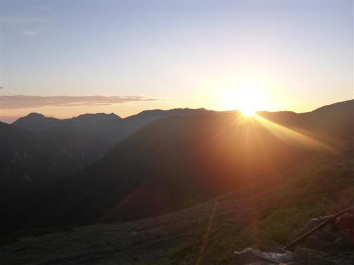
双六岳と双六小屋が赤く染まっている。
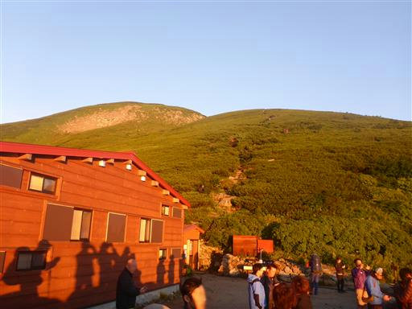
小屋に戻って朝食を取ったら出発。
本日は新穂高温泉に下山するのみの楽な行程。
双六小屋は広くてきれいで快適で、素晴らしい小屋だった。また泊まりに来たい。
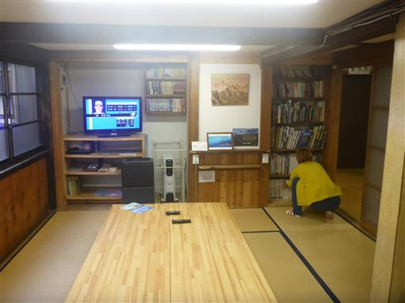
最後の最後で晴天に恵まれた本山行。
名残惜しいが下山の時間だ。
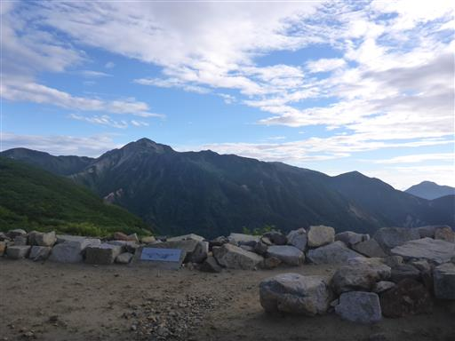
最初は少しの登り。笠ヶ岳の方向を目指して歩く。
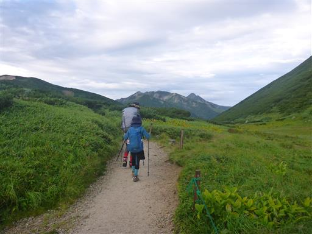
本山行で初めて、槍ヶ岳が目の前に現れる。
ようやく槍を望むことができた。

振り返ると鷲羽岳、水晶岳と双六小屋。これで見納めだ。
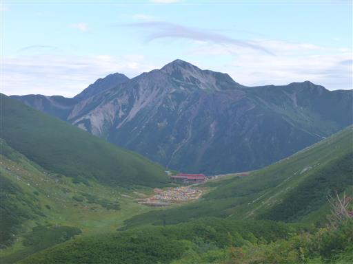
素晴らしい展望の尾根道を歩く。
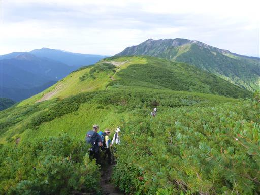
花見平から眺める穂高岳。存在感のある巨大な山だ。
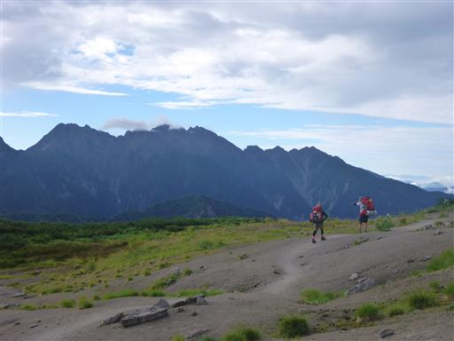
眼下に鏡平が見えてきた。
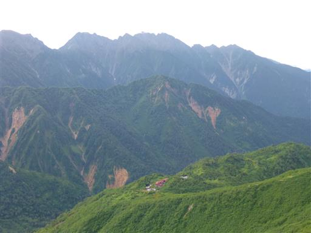
弓折分岐を通過。槍ヶ岳にかかっていた雲は消えた。
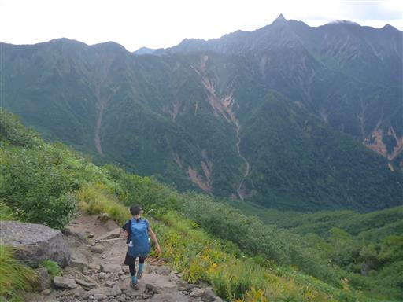
美しい赤色の実。何の実だろうか？
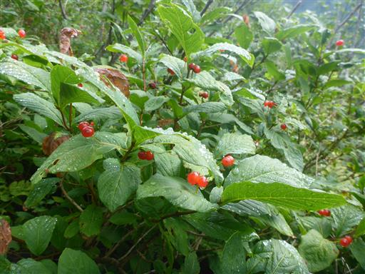
鏡平に到着。
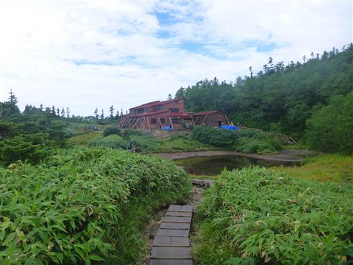
池に槍の姿が写っている。
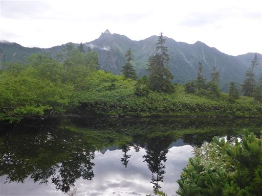
シシウドヶ原からは、蒲田川の向こうに焼岳と乗鞍岳が見えている。
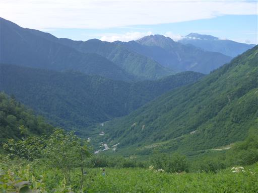
下から続々と登山者が登ってくる。すれ違いで待っている時間が長い。
急ぐ必要はないのでゆっくりと下っていく。
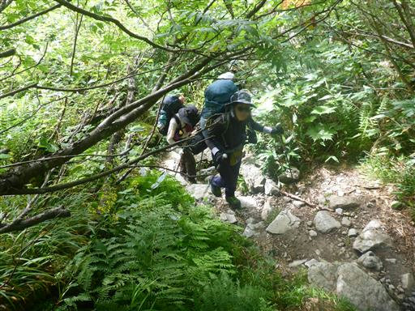
秩父沢を通過。頭上の岩尾根が美しい。
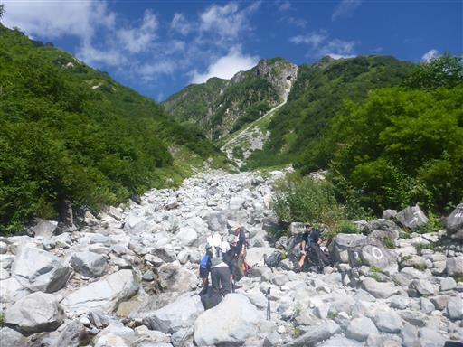
槍ヶ岳はもう、はるか高く、はるか遠くだ。
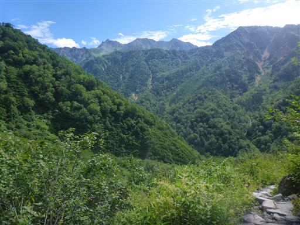
林道に出てくる。あとは長い林道歩きだ。
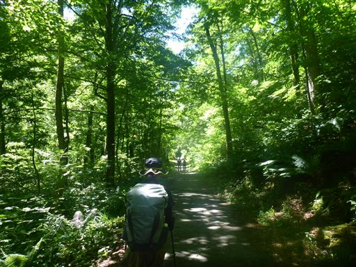
わさび平小屋に到着。
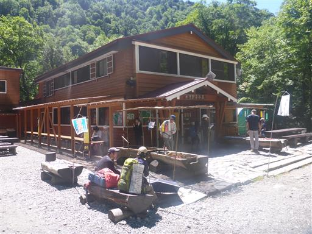
ここで昼食にそうめんを食べることにする。色合いがとても美しい。
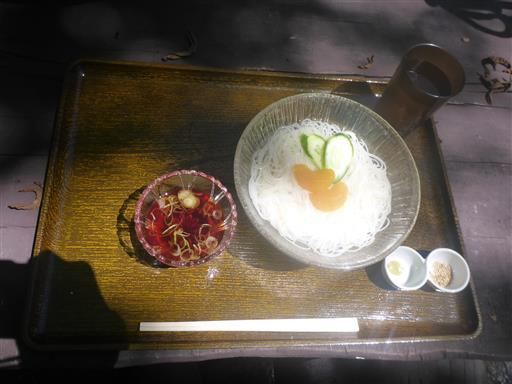
残りの林道を歩く。頭上に聳える岩尾根はすごく迫力がある。
錫杖岳の辺りだろうか？
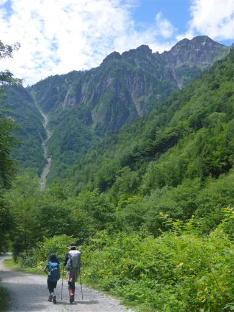
風穴。この辺りは所々に岩穴があり、冷気が出ていて涼しい。
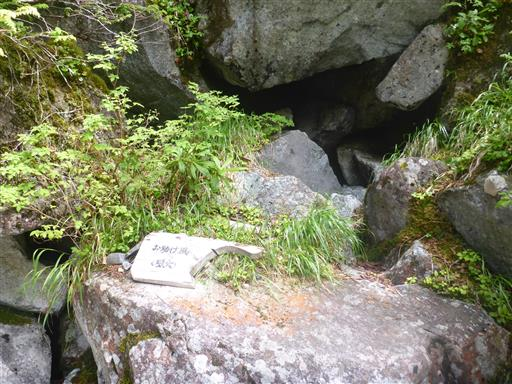
新穂高ロープウェイに戻ってくる。

新穂高登山指導センターで下山届を提出。
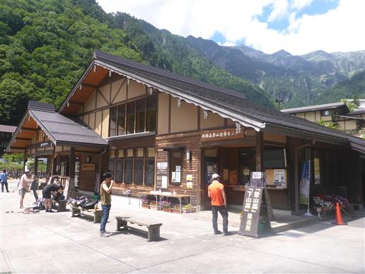
新穂高市営第3駐車場に戻ってくる。驚いたことに広大な駐車場はほぼ満車。
この様子だと、明日は早朝に来ても駐車は難しそうだ。
これで3泊4日の山行は終わり。決して天候に恵まれた訳ではなかったが
所々で素晴らしい景色に出会え、決行して良かったと思える山行だった。
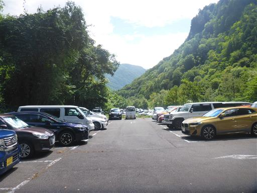
下山後はホテル穂高の温泉を利用。
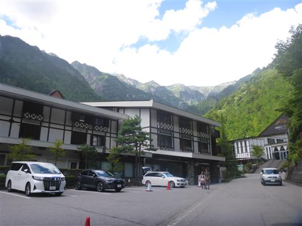
流石に高級ホテルだけあって設備はゴージャスだ。
快適な温泉で4日振りに汗を流す。
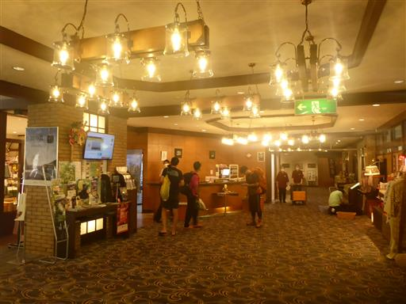
本日は平湯キャンプ場で宿泊。昨年に引き続きの利用だ。
予約時に常設テントしか空いていなかったため初めて利用してみる。
設営、撤収が無いのはものすごく楽で、1泊の場合はこういう選択肢もありだ。
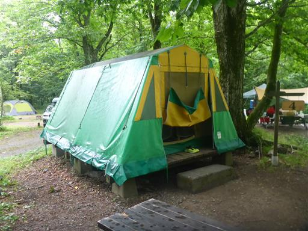
キャンプと言っても泊まるだけ。夕飯はレストラン・あんき屋でとる。
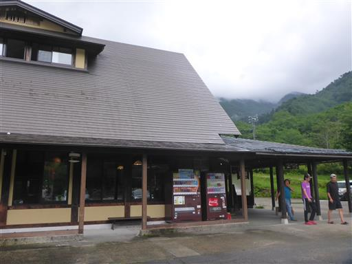
早めの夕飯後はキャンプ場を散策。とてつもなく広大なキャンプ場だ。
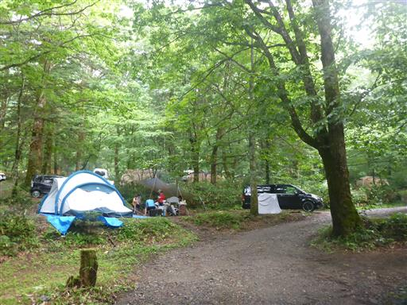
小さな川を堰き止めて遊ぶ。
昨年もここで同じ遊びをしており、そのときの石がまだ残っていた。
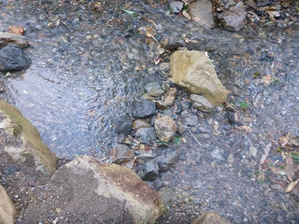
キャンプ場から目立つ山が見える。恐らく笠ヶ岳だ。
本日も疲れたので、20時前には就寝。
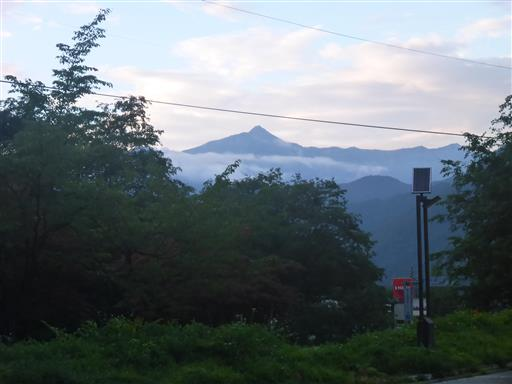